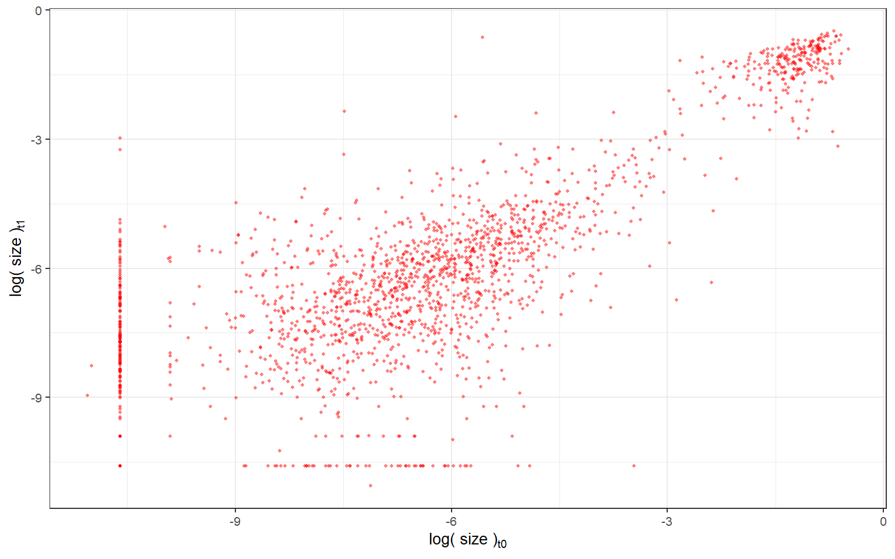

4 Adler Dataset: Example of Workflow
At this point, we’ve planned out a roadmap for digitization in a general sense, but how do these steps actually happen in a real example? The following sections walk through the digitization of an IPM that Aldo and I worked on last year, using part of a dataset that you will soon become very familiar with! All of the code to reproduce the IPM is included, with extensive commentary to explain the different decisions we made along the way.
4.1 Introduction to the Adler dataset
The Adler dataset is composed of a collection of chart quadrat data that was collected across the western United States in the early to mid twentieth century. Chart quadrat data consists of paper maps that track each individual of each plant species in a 1 square meter plot from census to census (usually yearly but not always). Grasses are mapped as polygons and forbs are mapped as points. Because of these methods, IPMs can only be used to model the population dynamics of the grasses; forbs must be modeled using age-structured matrix models. Chart quadrats census the whole community, but here we will focus on the species with roughly 100 individuals per year.
Chart quadrat data are analyzed through the R package plantTracker to extract individual data on site, survival, and recruitment. We plan run plantTracker in advance, and to provide you with the data.
We will use the chart quadrat dataset collected from Colorado as our example to learn how to work with these data. There are six other sites that will then each be assigned to a digitizer (including one from Moore et al.); other datasets may follow later on. For now, we formatted data for a total of 15 IPMs, and at least 4 MPMs. If you end up needing to use plantTracker at any point to process a new incoming chart quadrat dataset, we have some example scripts you can use in addition to the resources provided with the plantTracker package documentation:
https://doi.org/10.1111/2041-210X.13950
https://github.com/aestears/plantTracker
Digitizing models from the Adler dataset requires consulting with relevant publications which may have already parameterized models from these data, as well as modeling a bit at your own discretion with our guidance. The materials which follow should provide you with the tools to tackle the Adler dataset, but please don’t hesitate to ask for help!
4.2 Publications featuring the Adler dataset
Once you have been assigned to a site or subset of the Adler dataset, you should first read the publications which have already worked with the data. Note that the list below should not be considered exhaustive; you might find other papers which use these data and it is your job to make sure you read any that might be relevant. Additionally, not all of the papers below will be relevant to all of the species at your assigned site, and some of them may not be relevant at all to creating IPMs/MPMs. The list is just to provide you with some context about the dataset and give you a place to begin understanding how to model these data.
- All sites:
- Chu et al., 2013, Journal of Vegetation Science https://doi.org/10.1111/jvs.12106
- Stears et al., 2022, Methods in Ecology and Evolution https://doi.org/10.1111/2041-210X.13950
- Chu & Adler, 2015, Ecological Monographs https://doi.org/10.1890/14-1741.1 (except Colorado)
- Chu et al., 2016, Nature Communications https://doi.org/10.1038/ncomms11766 (except Colorado)
- Tredennick et al., 2018, Ecology Letters https://doi.org/10.1111/ele.13154 (except Colorado)
- Chu & Adler, 2023, Journal of Ecology https://doi.org/10.1111/1365-2745.12212 (except Colorado)
- Colorado:
- Chu et al., 2013, Ecology https://doi.org/10.1890/13-0121.1
- Stears et al., 2022, Ecology https://doi.org/10.1002/ecy.3799
- Idaho:
- Adler et al., 2010, Ecology Letters https://doi.org/10.1111/j.1461-0248.2010.01496.x
- Zachmann et al., 2010, Ecology https://doi.org/10.1890/10-0404.1
- Dalgleish et al., 2011, Ecology https://doi.org/10.1890/10-0780.1
- Kansas:
- Adler et al., 2007, Ecology https://doi.org/10.1890/0012-9658(2007)88[2673:LMQFKP]2.0.CO;2
- Lauenroth & Adler, 2008, Journal of Ecology https://doi.org/10.1111/j.1365-2745.2008.01415.x
- Arizona:
- Anderson et al., 2012, Ecology https://doi.org/10.1890/11-2200.1
- Montana:
- Anderson et al., 2011, Ecology https://doi.org/10.1890/11-0193.1
- Tredennick et al., 2016, Methods in Ecology and Evolution https://doi.org/10.1111/2041-210X.12686
- New Mexico:
- Christensen et al., 2021, Ecology https://doi.org/10.1002/ecy.3530
4.3 plantTracker
The majority of the Adler dataset is available in its most raw form: digitized shapefiles of the original maps, and tabular data describing the shapefiles (as well as other information about the sites). The data must be transformed into a format that can be used to parameterize the vital rate models which we can do with the package plantTracker, developed by the Adler lab. Essentially, plantTracker overlays maps of each plot from successive timesteps and assigns unique identifiers to each individual based on their locations in the plot in order to track each individual throughout the monitored period. We can define a number of parameters to tell plantTracker how precisely polygons and points from successive years must overlap in order to be considered the same individual. Stears et al. (2022, Methods in Ecology & Evolution) provides an excellent description of these parameters and how plantTracker works, if you are interested in reading more about it. For most of the Adler dataset, we will use the parameters described in the relevant publications (which I believe are also the default values). For the example dataset we will work through here (Colorado, focusing on Bouteloua gracilis), the call to use plantTracker looked like this:
datTrackSpp <- trackSpp( CO_grasses_raw_df,
quad_inventory_list,
dorm = 1,
buff = 0.05,
clonal = TRUE,
buffGenet = 0.05,
aggByGenet = TRUE,
flagSuspects = TRUE )Here, CO_grasses_raw_df was the raw dataframe containing all spatial information for all maps, filtered specifically to only include the grasses which had a minimum cover of 100, and quad_inventory_list included the metadata about each mapped quadrat. For the rest of the arguments:
- dorm = 1: individuals are permitted to go dormant for one year and reappear in the same spot in year t2 as they appeared in year t0
- buff = 0.05: individuals are allowed to “move” no more than 5 cm between years, which accounts for minor errors in mapping and also true variation in where individuals are located from year to year
- clonal = TRUE: single genetic individuals (genets) can be composed of multiple vegetative segments (ramets) distributed across multiple rows of the data
- buffGenet = 0.05: polygons of the same species within 5 cm of each other can be considered part of the same genet
- aggByGenet = TRUE: multiple rows referring to the same genet will be aggregated so that each genet is only described by a single row
- flagSuspects = TRUE: suspect observations will be flagged; observations can be suspect if an individual shrinks more than 10%, or if an individual which went dormant in time t1 had an area of less than 0.05 in time t0
The output of plantTracker is a dataframe describing the survival (and size, for grasses) of each individual throughout its entire tracked period. We can also see in which year an individual was added to the population as a recruit and the age of the individuals in each year, except for the individuals which were present in the first year.
## Quad trackID Year basalArea_genet recruit survives_tplus1 age size_tplus1 nearEdge Suspect Treatment Pasture
## 1 gzgz_11 BOUGRA_1997_1 1997 0.4126254 NA 1 NA 0.4117354 TRUE FALSE gzgz 11
## 2 gzgz_11 BOUGRA_1997_1 1998 0.4117354 NA 1 NA 0.3879517 TRUE FALSE gzgz 11
## 3 gzgz_11 BOUGRA_1997_1 1999 0.3879517 NA 1 NA 0.3754913 TRUE FALSE gzgz 11
## 4 gzgz_11 BOUGRA_1997_1 2000 0.3754913 NA 1 NA 0.4095949 TRUE FALSE gzgz 11
## 5 gzgz_11 BOUGRA_1997_1 2001 0.4095949 NA 1 NA 0.1874513 TRUE FALSE gzgz 11
## 6 gzgz_11 BOUGRA_1997_1 2002 0.1874513 NA 1 NA 0.3677826 TRUE FALSE gzgz 11We can then use these data to parameterize vital rate models and then MPMs/IPMs, following the general workflow described in Chapter 3. Below, I will walk us through this workflow for our example species from Colorado, Bouteloua gracilis.
4.4 Workflow with example dataset
4.4.1 1. Reading the publications
The Colorado dataset is featured in four of the publications linked above. In Stears et al. (2022, Methods in Ecology & Evolution), the dataset is only mentioned as an example of the type of data which can be analyzed using plantTracker, so there is nothing new to extract from here. In the other three papers, Chu et al. (2013, Ecology), Chu et al. (2013, Journal of Ecology), and Stears et al. (2022, Ecology), details are given about how the data were collected, but there is little else to gain for our models. The one piece of information that might be useful is that the tracked plots are not all equal; there are two levels of a grazing experiment (historically grazed or ungrazed, and grazed or ungrazed during the sampling period, four total treatment combinations) which we should consider analyzing separately (see Chapter 5 ).
4.4.2 2. Sketching an outline of the IPM
We are going to use this dataset to produce a single IPM based on all of the aggregated data for Bouteloua gracilis. In theory, however, this dataset could be exploited in a number of different ways. We have sufficient data to produce yearly models, and RUPDemo focuses on temporal replication (in order to focus on the effects of yearly climate). Additionally, each of the six tracked pastures has one plot of each treatment combination: grazed in the past + grazed now (gzgz), ungrazed in the past + grazed now (ungz), grazed in the past + ungrazed now (gzun), and ungrazed in the past + ungrazed now (unun). In theory, we could construct as many as 126 IPMs from these data:
- 1 IPM per transition, all plots aggregated (13 IPMs)
- 1 IPM using mean parameter values across all transitions and all plots (1 IPM)
- 1 IPM per transition, per treatment combination (13 x 4 = 52 IPMs)
- 1 IPM per treatment combination, using mean parameter values across all transitions (4 IPMs)
- 1 IPM per transition, per historical treatment, ignoring the current treatment (13 x 2 = 26 IPMs)
- 1 IPM per historical treatment, using mean parameter values across all transitions and ignoring the current treatment (2 IPMs)
- 1 IPM per transition, per current treatment, ignoring the historical treatment (13 x 2 = 26 IPMs)
- 1 IPM per current treatment, using mean parameter values across all transitions and ignoring the historical treatment (2 IPMs)
| gzgz | gzun | ungz | unun | Total | |
|---|---|---|---|---|---|
| 1997 | 10 | 6 | 14 | 12 | 42 |
| 1998 | 16 | 8 | 15 | 19 | 58 |
| 1999 | 43 | 29 | 33 | 54 | 159 |
| 2000 | 43 | 5 | 20 | 16 | 84 |
| 2001 | 54 | 23 | 45 | 52 | 174 |
| 2002 | 123 | 22 | 65 | 724 | 934 |
| 2003 | 99 | 12 | 38 | 137 | 286 |
| 2004 | 118 | 18 | 53 | 94 | 283 |
| 2005 | 78 | 14 | 46 | 35 | 173 |
| 2006 | 67 | 10 | 104 | 52 | 233 |
| 2007 | 143 | 39 | 46 | 86 | 314 |
| 2008 | 134 | 50 | 64 | 94 | 342 |
| 2009 | 90 | 40 | 45 | 70 | 245 |
| 2010 | 71 | 29 | 53 | 67 | 220 |
Only a few treatment x year combinations have enough individuals for IPMs, and even if we aggregate all individuals across all treatments, three years have insufficient individuals! We could combine all yearly data, and produce four IPMs - one for each treatment. However, we will focus first on just constructing the mean IPM. In Chapters 5 through 7, we will explore some of these other options.
Let’s take a look at our data to see what kinds of information we have to work with:
## Quad trackID Year basalArea_genet recruit survives_tplus1 age size_tplus1 nearEdge Suspect Treatment Pasture
## 1 gzgz_11 BOUGRA_1997_1 1997 0.4126254 NA 1 NA 0.4117354 TRUE FALSE gzgz 11
## 2 gzgz_11 BOUGRA_1997_1 1998 0.4117354 NA 1 NA 0.3879517 TRUE FALSE gzgz 11
## 3 gzgz_11 BOUGRA_1997_1 1999 0.3879517 NA 1 NA 0.3754913 TRUE FALSE gzgz 11
## 4 gzgz_11 BOUGRA_1997_1 2000 0.3754913 NA 1 NA 0.4095949 TRUE FALSE gzgz 11
## 5 gzgz_11 BOUGRA_1997_1 2001 0.4095949 NA 1 NA 0.1874513 TRUE FALSE gzgz 11
## 6 gzgz_11 BOUGRA_1997_1 2002 0.1874513 NA 1 NA 0.3677826 TRUE FALSE gzgz 11For each individual, we have information on the size at time t0 (basalareaGenet) and at time t1 (size_tplus1), whether the individual survives from t0 to t1 (survives_tplus1), and whether the individual is a recruit in a given year (NA meaning that the individual was present in the first year so we cannot know if it is a recruit or not, 0 meaning not a recruit, 1 meaning it is a recruit). From this information, we will be able to construct our three vital rate models.
Our recruitment data is available at the plot-level, but we do not have any information about how many recruits are produced by a given individual. Therefore, our recruitment model must be constructed as the number of recruits produced per non-recruit (henceforth, let’s call these “adults”) at time t0. This means that “recruits” are not a discrete stage but rather will be included as part of the continuous matrix describing size at t0 and size at t1, with the only thing differentiating recruits from adult plants is that in their first year (the year they are recruited into the population), the recruits can have an arbitrarily small size at t0 (when they were recorded as points rather than polygons on the map). Our IPM will therefore be the sum of the P kernel, \(P(z', z) = s(z) * G(z', z)\), and the F kernel, \(F(z') = f(z')\), where \(s(z)\) represents the survival probability of an individual of size \(x\) at time t0, \(G(z', z)\) represents the transition from size \(z\) at time t0 to size \(z'\) at time t1 (using a probability density distribution), and \(f(z')\) represents the size \(z'\) of recruits at time t1 dependent on the number of non-recruits at time t0.
4.4.3 3. Making the parameter “shopping list”
Given that we are building IPMs from data, we now need to estimate the parameters for the IPM submodels: the survival model \(s(z)\), the growth model, \(G(z',z)\), and the recruitment model, \(F(z')\).
4.4.3.1 Survival model
Survival is measured as binary data (0 = did not survive to time t1, 1 = survived to time t1) so it is modeled with a generalized linear model which uses a binomial distribution and a logit “link function”. In mathematical notation, we can describe the survival model as:
\[Logit(s(z)) = \beta_{s0} + \beta_{s1} * z\]
where \(z\) is the size of an individual at time t0, \(\beta_{s0}\) is the intercept and \(\beta_{s}\) is the slope. To estimate \(\beta_{s0}\) and \(\beta_{s1}\) in R, we would model this as:
glm( survives_t1 ~ size_t0, data = survival_df, family = binomial )In ipmr, due to a technical issue, the model is written using the inverse logit equation:
s = 1 / ( 1 + exp( -( beta_s0 + beta_s1 * size_0 ) ) )The values for beta_s0 and beta_s1 will come from the model estimates from the R model, so these values will be added to our “shopping list.”
4.4.3.2 Growth model
The growth model, which describes the transition in size of an individual from time t0 to time t1, relies on a Gaussian probability density function to generate \(size_{t1}\) (\(z'\) in the IPM model) given a certain \(size_{t0}\) (\(z\) in the IPM). We can write the growth model in a more conventional notation to better align with how we will need to write the model for PADRINO:
\[G(z', z) = f_{g}(z', \mu_{g}, \sigma_{g})\] \[\mu_{g} = \beta_{g0} + \beta_{g1} * z\] \[ \sigma_{g} = \sqrt{( a * e^{( b * z )} )}\]
where \(f_{g}\) denotes the Gaussian probability density function which outputs the size of an individual at time t1 (\(z'\)) based on the size at time t0 (\(z\)). In R, we will model \(\mu_{g}\) to obtain the values \(\beta_{g0}\) and \(\beta_{g1}\), and we will also model \(\sigma_{g}\) using the nonlinear least-squares estimates to obtain the parameters which describe the variance of the growth model (where a is the intercept and b is the slope):
lm( size_t1 ~ size_t0, data = growth_df )
nls( y ~ a * exp( b * x ), start = list( a = 1, b = 0 ) )Once we have all of the parameter values, we will need to write the growth model in three parts for PADRINO:
g = Norm( mu_g, sigma_g )
mu_g = beta_g0 + beta_g1 * size_1
sigma_g = sqrt( a * exp( b * size_0 ) )In total, we are adding beta_g0, beta_g1, a, and b to our shopping list for the growth model.
4.4.3.3 Recruitment model
As previously discussed, the recruitment model will express a size-independent per-capita rate of recruitment. In mathematical notation: \[F(z') = \beta_{f} * r_{d}(z')\] \[r_{d}(z') = f_{r_{d}}(z', \mu_{r_{d}}, \sigma_{r_{d}})\]
In R, we will write the model as:
MASS::glm.nb( NRquad ~ 1, data = recr_df )This will give us our estimate for \(\beta_{f}\). The other estimates will come from the raw data. \(\beta_{f}\) represents the mean per-capita recruitment rate, i.e. N_recruit_t1 / N_adult_t0 for each plot x year; \(\mu_{r_{d}}\) represents the mean size of recruits in year t0 when they were added to the population; and \(\sigma_{r_{d}}\) represents the standard deviation of the recruit sizes in year t0. The recruitment model will be formatted for PADRINO as:
fy = beta_f * r_d
r_d = Norm( recr_sz, recr_sd )Therefore, we will add beta_f, recr_sz, and recr_sd to the “shopping list” for the recruitment model.
4.4.3.4 Other parameters
In addition to the vital rate parameters, there are a few other parameters we will need to define in order to build our IPM in PADRINO. These include the minimum and maximum sizes over which we will integrate, as well as the number of bins that ipmr will use to solve the integral. We will calculate the minimum and maximum sizes from the raw data, and we will use 200 as the number of bins.
4.4.4 4. Taking inventory
Based on our parameter shopping list we generated previously, we will need to calculate or generate estimates from linear models for all of our parameter values. If we were working with a published IPM, this is where we would consult the publication and supplemental materials to track down as many of these values as possible.
4.4.5 5. Creating a new R project
Here is an example of how we might organize this R project, assuming that we will write IPMs for other species from the Colorado site:| 📁 Adler_Colorado | ||
| ↳ | 🅁 Adler_Colorado.Rproj | |
| 📁 data | ||
| ↳ | 📁 Bou_gra | |
| 📁 R | ||
| ↳ | 📁 Bou_gra | |
| 📁 results | ||
| ↳ | 📁 Bou_gra | |
| 📁 supplement |
4.4.6 6. Data formatting
To fit models from the raw data, we will produce separate data frames for the survival, growth, and recruitment models. The original files will be given to you as either .csv or .rds files, which contain the output from plantTracker. For now, we will assume that we’re working with the csv containing only the data for Bouteloua gracilis, which we abbreviate as “Bou_gra”.
Bou_gra <- read.csv( "https://raw.githubusercontent.com/aspen1030/RUPDemo/main/Bou_gra.csv" )We also want to take a moment to check the spatiotemporal replication of the entire dataset, to see if all plots were sampled in every year, or if any plots/years were skipped during data collection. Aldo and I will have already done this before sending you the data for your project and we will let you know if there are any inconsistencies to keep in mind, but let’s briefly walk through how we check for sampling completion. The easiest way is to just plot every year x quadrat combination in a grid and check for gaps:
file_quads <- 'https://www.dropbox.com/scl/fi/vc5sg2fqj4kf5l9wbnjcj/quad_inventory.csv?rlkey=2arxy6cor1cwsbo4mul5z1dv1&dl=1'
quad_inventory <- read.csv( file_quads, sep = '\t' ) %>%
pivot_longer( gzgz_11:unun_7,
names_to = 'Quad',
values_to = 'Year' )
ggplot( quad_inventory, aes( x = Year, y = Quad ) ) + geom_point( )In this plot, a point indicates that a certain quadrat was surveyed in the year indicated on the x axis. Each quadrat is described by its treatment combination, followed by a number which refers to the pasture it is in. No data exist for a handful of quadrats in the year 2000, for any species. These discontinuities will not have substantial effects on vital rate estimation other than dramatically changing sample size in the 1999-2000 and 2000-2001 transitions. However, these discontinuities will require care when estimating population growth rates, which we will need to check our models. This is because, without care, we might get a crash in population growth in 1999-2000, and an explosion in 2000-2001.
Before we create our dataframes for each vital rate model, we need to update the 2009 survival data. Because we told plantTracker that plants can go dormant for 1 year, all individuals which were alive in 2009 but not recorded in 2010 (the final year of surveys) are given an “NA” value in the column describing survival to time t1. We’re going to go ahead and assume that these individuals all died, so those NA values need to be changed to zero.
Bou_gra <- Bou_gra %>%
mutate( survives_tplus1 = replace( survives_tplus1,
is.na( survives_tplus1 ) & Year == 2009,
0 ) )We can then test this:
Bou_gra %>%
group_by( Year ) %>%
summarise( prop = sum( survives_tplus1, na.rm = T ) / length( survives_tplus1 ) )## # A tibble: 14 × 2
## Year prop
## <int> <dbl>
## 1 1997 0.857
## 2 1998 0.672
## 3 1999 0.415
## 4 2000 0.798
## 5 2001 0.753
## 6 2002 0.301
## 7 2003 0.493
## 8 2004 0.530
## 9 2005 0.676
## 10 2006 0.652
## 11 2007 0.739
## 12 2008 0.705
## 13 2009 0.686
## 14 2010 0Here we can see that the proportion of individuals which survive to time t1 in 2009 is not unrealistically higher than the other years, and since we remove the NAs in the calculation, the proportion of individuals in 2010 which survive to time t1 (2011) is zero, or otherwise completely unknown.
Now we can create a subsetted dataframe containing the information we need for our survival vital rate model:
surv <- subset( Bou_gra, !is.na( survives_tplus1 ) ) %>%
subset( basalArea_genet != 0 ) %>%
select( Quad, Year, trackID, Treatment, Pasture,
basalArea_genet, logsize,
survives_tplus1, size_tplus1 )Here we are taking only individuals which we definitively know about their survival in year t1, which means we exclude the final year of sampling data since we do not know what happened in the following year. We also excluded individuals which have size_t0 (basalArea_genet) equal to zero since these individuals may have been tracked incorrectly. Lastly, we select the columns which might be relevant to our survival model, including information about the year, treatment, individual ID, size, and survival.
Next, we will create a subsetted dataframe containing the information we will need for our growth vital rate model:
grow <- Bou_gra %>%
subset( basalArea_genet != 0) %>%
subset( size_tplus1 != 0) %>%
select( Quad, Year, trackID, Treatment, Pasture,
basalArea_genet, logsize,
survives_tplus1, size_tplus1)Here we are excluding individuals which have size_t0 and size_t1 equal to zero (which died or recruited), and then selecting the same relevant columns.
Originally we thought that we should calculate the recruitment rate based on the mean area occupied by adults at time t0, which meant that we needed to calculate the total area occupied by adults for each plot x year:
quad_df <- Bou_gra %>%
group_by( Species, Pasture, Quad, Year ) %>%
summarise( totParea = sum( basalArea_genet ) ) %>%
ungroupThen, we took the mean of these areas across each pasture x year:
group_df <- quad_df %>%
group_by( Species, Pasture, Year ) %>%
summarise( Gcov = mean( totParea ) ) %>%
ungroupNext, we put the cover data together into one dataframe to link cover at time t0 to the number of recruits at time t1, dropping NAs just in case there were still any left at this point:
cover_df <- left_join( quad_df, group_df ) %>%
mutate( Year = Year + 1 ) %>%
mutate( Year = as.integer( Year ) ) %>%
drop_na()However, further exploration of the data resulted in this information being irrelevant to our model. In the model we will actually work with, we only need to calculate the number of recruits for each plot x year:
recr_df <- Bou_gra %>%
group_by( Species, Pasture, Quad, Year ) %>%
summarise( NRquad = sum( recruit, na.rm=T ) ) %>%
ungroupThe merged dataframes (dropping NAs which inevitably show up in NRquad) is what you will find in the Github, but just know that we will only work with the number of recruits per quad, NRquad, in recr:
recr <- left_join( cover_df, recr_df ) %>%
drop_naLastly, we should write these three dataframes as csv files to be loaded into the subsequent scripts:
write.csv( surv, "data/Bou_gra/survival_df.csv" )
write.csv( grow, "data/Bou_gra/growth_df.csv" )
write.csv( recr, "data/Bou_gra/recruitment_df.csv" )4.4.7 7. Plotting the raw data
In this step, we will explore the raw data and make some decisions about excluding certain data points before we fit our vital rate models. Note that most figures are preceded by script which saves the figure to the ‘results’ folder in the R project; I have commented out this command because there is no need to run it in the Markdown file, but it is included to give you examples of how these plots could be named and which plots should be exported.
Let’s first plot the raw data using histograms to examine the distributions of size at t0 and size at t1.
# png( 'results/Bou_gra/histograms.png', width = 8, height = 3, units = "in", res = 150 )
par( mfrow = c( 1, 2 ), mar = c( 3.5, 3.5, 1, 0.2 ), mgp = c( 2, 0.7, 0 ), cex = 0.8 )
hist( Bou_gra$basalArea_genet, main = "Histogram of size at time t0", xlab = "Size at time t0" )
hist( Bou_gra$size_tplus1, main = "Histogram of size at time t1", xlab = "Size at time t1" )# dev.off( )It is immediately apparent that the vast majority of individuals are very small, but that there are a few individuals which are much larger. The distribution for size at time t1 is nearly identical to that of size at time t0. These data are not normally distributed, which we can consider correcting for by log-transforming the sizes:
# png( 'results/Bou_gra/histograms_log.png', width = 8, height = 3, units = "in", res = 150 )
par( mfrow = c( 1, 2 ), mar = c( 3.5, 3.5, 1, 0.2 ), mgp = c( 2, 0.7, 0 ), cex = 0.8 )
hist( Bou_gra$logsize, main = "Histogram of log-transformed size at time t0", xlab = "log( Size at time t0 )" )
hist( log( Bou_gra$size_tplus1 ), main = "Histogram of log-transformed size at time t1", xlab = "log( Size at time t1 )" )
# dev.off( )Log transformation approaches a more normal distribution, especially in size at time t1, but the data are still not perfectly described by the normal distribution. For now, we will move on to plotting the vital rates and then revisit the distributions of the data once we filter out some datapoints.
Next, we want to plot all of the vital rates. In order to plot survival, we need to put the survival data into binned proportions. Since the survival data are binary, it is very hard to notice any patterns in the relationship between size_t0 and survival at t1 when the raw data are plotted, as the points just appear as solid lines at 0 and 1 on the y axis. But by binning the survival data into classes based on size_t0, we can examine the proportion of individuals in each size class which survive and therefore read the plot as “what is the relationship between size and probability of survival?”
Let’s first look at all of the survival data:
h <- ( max( Bou_gra$logsize, na.rm = T ) - min( Bou_gra$logsize, na.rm = T ) ) / 20
lwr <- min( Bou_gra$logsize, na.rm = T ) + ( h * c( 0:( 20 - 1 ) ) )
upr <- lwr + h
mid <- lwr + ( 1/2 * h )
binned_prop <- function( lwr_x, upr_x, response ){
id <- which( Bou_gra$logsize > lwr_x & Bou_gra$logsize < upr_x )
tmp <- Bou_gra[id,]
if( response == 'prob' ){ return( sum( tmp$survives_tplus1, na.rm = T ) / nrow( tmp ) ) }
if( response == 'n_size' ){ return( nrow( tmp ) ) }
}
y_binned <- Map( binned_prop, lwr, upr, 'prob' ) %>% unlist
x_binned <- mid
y_n_size <- Map( binned_prop, lwr, upr, 'n_size' ) %>% unlist
surv_binned <- data.frame( xx = x_binned,
yy = y_binned,
nn = y_n_size ) %>%
setNames( c( 'logsize', 'survives_tplus1', 'n_size' ) )
# png( 'results/Bou_gra/survival_binned.png', width = 6, height = 4, units = "in", res = 150 )
ggplot( data = surv_binned, aes( x = logsize, y = survives_tplus1 ) ) +
geom_point( alpha = 1,
pch = 16,
size = 1,
color = 'red' ) +
scale_y_continuous( breaks = c( 0.1, 0.5, 0.9 ) ) +
theme_bw( ) +
theme( axis.text = element_text( size = 8 ),
title = element_text( size = 10 ) ) +
labs( x = expression( 'log(size)'[t0] ),
y = expression( 'Survival to time t1' ) )# dev.off( )Together, the data show a general trend of increasing probability of survival as log( size_t0 ) increases, which we would expect.
Now we can take a look at the growth data:
# png( 'results/Bou_gra/growth.png', width = 6, height = 4, units = "in", res = 150 )
ggplot(data = grow, aes( x = logsize, y = log( size_tplus1 ) ) ) +
geom_point( alpha = 0.5,
pch = 16,
size = 0.7,
color = 'red' ) +
theme_bw( ) +
theme( axis.text = element_text( size = 8 ),
title = element_text( size = 10 ) ) +
labs( x = expression( 'log( size )'[t0] ),
y = expression( 'log( size )'[t1] ) )
# dev.off( )The most obvious feature of this plot is the bold vertical line at the minimum of log( size_t0 ). These points represent individuals which were recruited into the population at time t0 (and were given an arbitrarily small area) and which grew to a larger size in time t1. More interesting are the points forming horizontal lines, which represent individuals which were of a decent size in time t0, but then regressed to the minimum size in year 1. It is possible that some of these individuals actually died after the census in t0 and a new seedling germinated in roughly the same place before the census in t1, but we really do not know for sure if this is the case for all of these individuals. Since it is possible that individuals regressed in size, we will keep these datapoints. Keep in mind the scale of the axes; since the sizes have been log-transformed, the largest size possible is 0, which corresponds to 1 m\(^2\). The rest of the plot appears more or less how we would expect: a positive relationship between size_t1 and size_t0, with some variation. Most individuals seem to fall between -9 (corresponding to 0.01 cm\(^2\)) and -3 (corresponding to 4 cm\(^2\)), which are all fairly small plants. It would not be unreasonable to assume that what appears from this plot as plants shrinking quite a lot from time t0 to time t1 are actually the result of measurement error. The only individuals we might consider filtering out are those with an “impossible” size, i.e. individuals whose size is smaller than the minimum size that we specified when assembling the plantTracker data.
Now that we have an idea of how the size and survival data look, let’s take a look at the per-capita recruitment:
# png( 'results/Bou_gra/recruit.png', width = 6, height = 4, units = "in", res = 150 )
ggplot( recr, aes( x = totParea, y = NRquad ) ) +
geom_point( alpha = 0.5,
pch = 16,
size = 1,
color = 'red' ) +
theme_bw( ) +
labs( x = expression( 'Total parent plant area'[t0] ),
y = expression( 'Number of recruits'[t1] ) )# dev.off( )Immediately we notice an outlier which obscures our ability to examine the dataset as a whole. This is a single plot where 682 individuals were recruited into the plot in 2002. Let’s remove the outlier and take a look:
# png( 'results/Bou_gra/recruit_nomax.png', width = 6, height = 4, units = "in", res = 150 )
recr %>% filter( NRquad != max( recr$NRquad ) ) %>% ggplot( aes( x = totParea, y = NRquad ) ) +
geom_point( alpha = 0.5,
pch = 16,
size = 1,
color = 'red' ) +
theme_bw( ) +
labs( x = expression( 'Total parent plant area'[t0] ),
y = expression( 'Number of recruits'[t1] ) )# dev.off( )Now we can see that most plots have very few or even no recruits, and that there appears to be a negative relationship between total parent plant area at time t0 and the number of recruits at time t1. Biologically, we might explain this as negative density dependence, where adult plants are suppressing recruitment into their direct vicinity to avoid competition with members of the same species, or it might simply be that the space is already occupied and there is nowhere for recruits to germinate. In plots with low parent plant area, there might be more open ground where germination can occur. We will not filter out any data from the recruitment dataframe.
We will, however, modify the handful of “impossibly small” individuals from the growth and survival data. These are individuals whose log( size ) at either t0 or t1 is less than the arbitrarily small size that was assigned to individuals that were recorded as points on the chart quadrat maps. For some reason, when these individuals were digitized, they were digitized as polygons that ended up with areas less than the arbitrarily small size (0.25 cm\(^2\), or -10.59663 on the log scale). There are three records with areas less than this size.
Quad gzgz_24, BOUGRA_2003_53, 2003: This is a recruit in 2003 which dies before the census in 2004, so we will just change the size_t0:
Bou_gra[which( Bou_gra$Quad == "gzgz_24" & Bou_gra$trackID == "BOUGRA_2003_53" ),7] <- 0.000025 Bou_gra[which( Bou_gra$Quad == "gzgz_24" & Bou_gra$trackID == "BOUGRA_2003_53" ),16] <- log( 2.5e-05 )Quad gzgz_24, BOUGRA_2002_1, 2003: This plant recruited in 2002 but then shrank to below the minimum size in 2003, so we will need to change size_t0 in 2003 and size_t1 in 2002:
Bou_gra[which( Bou_gra$Quad == "gzgz_24" & Bou_gra$trackID == "BOUGRA_2002_1" & Bou_gra$Year == "2003" ),7] <- 0.000025 Bou_gra[which( Bou_gra$Quad == "gzgz_24" & Bou_gra$trackID == "BOUGRA_2002_1" & Bou_gra$Year == "2003" ),16] <- log( 2.5e-05 ) Bou_gra[which( Bou_gra$Quad == "gzgz_24" & Bou_gra$trackID == "BOUGRA_2002_1" & Bou_gra$Year == "2002" ),11] <- 0.000025Quad ungz_24, BOUGRA_2006_7, 2006: This is a recruit in 2006 which entered the population with a size below the minimum size, so we will only need to change size_t0 in 2006:
Bou_gra[which( Bou_gra$Quad == "ungz_24" & Bou_gra$trackID == "BOUGRA_2006_7" & Bou_gra$Year == "2006" ),7] <- 0.000025 Bou_gra[which( Bou_gra$Quad == "ungz_24" & Bou_gra$trackID == "BOUGRA_2006_7" & Bou_gra$Year == "2006" ),16] <- log( 2.5e-05 )
Once we perform these changes (which we should be recording in our notes file, by the way!), we should re-run the Data Formatting script on the modified Bou_gra dataframe and save new versions of the vital rate dataframes. Add a suffix to the file names like “_mod” or “_clean” when you write the new csvs to indicate that these files have the modified datapoints, and so you don’t write over the original versions in case you want to check something else out later!
4.4.8 8. Fitting vital rate models for the mean IPM
Now that we have an idea of how our data are distributed and we have modified the occurrences that are not possible, we are ready to start fitting our vital rate models.
Let’s first do a bit more reformatting of the dataframes (after we’ve modified those individuals as mentioned in the previous step) to make our models more consistent:
grow_df <- grow %>%
mutate( logarea.t0 = log( basalArea_genet ),
logarea.t1 = log( size_tplus1 ) )
surv_df <- surv %>%
mutate( logarea = log( basalArea_genet ) )4.4.8.1 Growth model
Now we can start by modelling growth, using the simplest model to describe the effect of size at time t0 on size at time t1.
gr_mod_mean <- lm( logarea.t1 ~ logarea.t0, data = grow_df)Let’s check how well the mean model predicts the whole dataset.
grow_df$pred <- predict( gr_mod_mean, type = "response" )
grow_line <- ggplot( grow_df, aes( x = logarea.t0, y = logarea.t1 ) ) +
geom_point( ) +
geom_abline( aes( intercept = coef( gr_mod_mean )[1],
slope = coef( gr_mod_mean )[2] ),
color = 'red',
lwd = 2 )
grow_pred <- ggplot( grow_df, aes( x = logarea.t1, y = pred ) ) +
geom_point( ) +
geom_abline( aes( intercept = 0,
slope = 1 ),
color = "red",
lwd = 2 )
# png( 'results/Bou_gra/grow_pred.png', width = 10, height = 8, units = "in", res = 150 )
grow_line + grow_pred + plot_layout( )# dev.off( )The plot on the left shows the raw data with the model plotted over as a line, which seems to fit to the data more or less fine. The plot on the right shows the observed sizes at time t1 on the x axis and the sizes at time t1 predicted by the model on the y axis, with a 1:1 line plotted over the data. The model seems to slightly overestimate growth for smaller individuals, and slightly underestimate growth for the largest individuals.
Recall back to our “shopping list” that we constructed in step 3. Our growth model requires a slope and an intercept, which we can get from the output of the mean model, but also estimates of “a” and “b,” which will come from the variance model:
x <- fitted( gr_mod_mean )
y <- resid( gr_mod_mean )^2
gr_var_m <- nls( y ~ a * exp( b * x ), start = list( a = 1, b = 0 ) )We’ll get back to these later. For now, let’s move on to the survival model.
4.4.8.2 Survival model
This is the simplest model describing the effect of size at time t0 on survival to time t1:
su_mod_mean <- glm( survives_tplus1 ~ logarea, data = surv_df, family = "binomial" )Let’s quickly plot the data and see how well the model fits:
surv_x <- seq( min( surv_df$logarea ), max( surv_df$logarea ), length.out = 100)
surv_pred <- boot::inv.logit( coef( su_mod_mean )[1] + coef( su_mod_mean )[2] * surv_x )
surv_pred_df <- data.frame( logarea = surv_x, survives_tplus1 = surv_pred )
surv_line <- ggplot( ) +
geom_jitter( data = surv_df, aes( x = logarea,
y = survives_tplus1 ),
alpha = 0.25,
width = 0,
height = 0.25 ) +
geom_line( data = surv_pred_df, aes( x = logarea,
y = survives_tplus1 ),
color = 'red',
lwd = 2 )
surv_bin <- ggplot( ) +
geom_point( data = surv_binned, aes( x = logsize,
y = survives_tplus1 ) ) +
geom_line( data = surv_pred_df, aes( x = logarea,
y = survives_tplus1 ),
color = 'red',
lwd = 2 )
# png( 'results/Bou_gra/survival_pred.png', width = 10, height = 8, units = "in", res = 150 )
surv_line + surv_bin + plot_layout( )# dev.off( )On the left, I’ve used geom_jitter( ) and alpha = 0.25 to help with the visualization of the raw data but it’s still hard to tell how well the mean model fits the data. On the right, I’ve plotted the binned data we looked at previously and now we can see that the mean model seems to fit pretty well.
4.4.8.3 Recruitment model
Moving on to the recruitment model, remember we are modeling a per-capita rate of recruitment based on the number of adults in time t0, and we currently have the number of recruits at time t1 and the area occupied by adults at time t0 for each plot. First, we model the number of recruits using the negative binomial distribution:
rec_mod_mean <- MASS::glm.nb( NRquad ~ 1, data = recr_df )Next, we use the predict( ) function to predict the number of recruits per quad, and then we sum up the observed and predicted number of recruits across all quads:
recr_df <- recr_df %>%
mutate( pred_mod_mean = predict( rec_mod_mean, type = "response" ) )
rec_sums_df_m <- recr_df %>%
summarize( NRquad = sum( NRquad ),
pred_mod_mean = sum( pred_mod_mean ) )Then, we sum up the number of adults present across all time t0:
indiv_m <- surv_df %>%
summarize( n_adults = n( ) )Finally, we join these two dataframes and calculate a per-capita recruitment rate based on our model and on the observed recruits:
repr_pc_m <- indiv_m %>%
bind_cols( rec_sums_df_m ) %>%
mutate( repr_pc_mean = pred_mod_mean / n_adults ) %>%
mutate( repr_pc_obs = NRquad / n_adults ) %>%
drop_naAnd now we can compare the observed per-capita recruitment rate to the modeled per-capita recruitment rate:
repr_pc_m## n_adults NRquad pred_mod_mean repr_pc_mean repr_pc_obs
## 1 3327 1624 1624 0.4881274 0.4881274The values are exactly the same, as we would expect. We will calculate the mean and standard deviation of the recruit sizes in the next step.
4.4.8.4 Exporting parameter estimates
Now that we have all of our vital rate models, we need to store the coefficients from these models into dataframes containing our parameter estimates for the IPM.
Starting with the growth model:
grow_fe <- data.frame( coefficient = names( coef( gr_mod_mean ) ),
value = coef( gr_mod_mean ) )
var_m <- data.frame( coefficient = names( coef( gr_var_m ) ),
value = coef( gr_var_m ) )
grow_out <- Reduce( function(...) rbind(...), list( grow_fe, var_m ) ) %>%
mutate( coefficient = as.character( coefficient ) ) %>%
mutate( coefficient = replace( coefficient,
grepl( "Intercept", coefficient ),
"b0" ) )
# write.csv( grow_out, "data/Bou_gra/grow_pars.csv", row.names = F )And then the survival model:
surv_fe <- data.frame( coefficient = names( coef( su_mod_mean ) ),
value = coef( su_mod_mean ) )
surv_out<- Reduce( function(...) rbind(...), list( surv_fe ) ) %>%
mutate( coefficient = as.character( coefficient ) ) %>%
mutate( coefficient = replace( coefficient,
grepl( "Intercept", coefficient ),
"b0" ) )
# write.csv( surv_out, "data/Bou_gra/surv_pars.csv", row.names = F )We also have some other parameters we need to gather, including the per-capita recruitment rate which we will store as fecu_b0:
recSize <- Bou_gra %>% subset( recruit == 1)
others <- data.frame( coefficient = c( "rec_siz", "rec_sd",
"max_siz", "min_siz",
"fecu_b0" ),
value = c( mean( log( recSize$basalArea_genet ) ),
sd( log( recSize$basalArea_genet ) ),
grow_df$logarea.t0 %>% max,
grow_df$logarea.t0 %>% min,
repr_pc_m$repr_pc_mean ) )
# write.csv( others, "data/Bou_gra/other_pars.csv", row.names = F )Now, we are finally ready to start building the IPM!
4.4.9 9. Building the IPM from scratch
We will first construct a dataframe containing all of our mean IPM parameters:
extr_value <- function(x, field){ subset( x, coefficient == field )$value }
pars_mean <- list( surv_b0 = extr_value( surv_out, "b0" ),
surv_b1 = extr_value( surv_out, "logarea" ),
grow_b0 = extr_value( grow_out, "b0" ),
grow_b1 = extr_value( grow_out, "logarea.t0" ),
a = extr_value( grow_out, "a" ),
b = extr_value( grow_out, "b" ),
fecu_b0 = extr_value( others, "fecu_b0" ),
recr_sz = extr_value( others, "rec_siz" ),
recr_sd = extr_value( others, "rec_sd" ),
L = extr_value( others, "min_siz" ),
U = extr_value( others, "max_siz" ),
mat_siz = 200 )
pars <- pars_mean
# write.csv( pars_mean, "data/Bou_gra/pars_mean.csv", row.names = F )Next, we need to write functions to describe each vital rate. Let’s start with growth. Recall that our growth function was modeled as:
lm( logarea.t1 ~ logarea.t0, data = grow_df )
nls( y ~ a * exp( b * x ), start = list( a = 1, b = 0 ) )And written in mathematical notation, as: \[G(z', z) = f_{g}(z', \mu_{g}, \sigma_{g})\] \[\mu_{g} = \beta_{g0} + \beta_{g1} * z\] \[ \sigma_{g} = \sqrt{( a * e^{( b * z )} )}\]
We need to write two functions: one which describes the standard deviation based on the input size at time t0, \(x\), and one which describes the transition from \(x\) to the size at time t1, \(y\), using a probability density distribution where the mean is described by our growth model. We can do that as such:
# Function describing standard deviation of growth model
grow_sd <- function( x, pars ) {
pars$a * ( exp( pars$b * x ) ) %>% sqrt
}
# Function describing growth from size x to size y
gxy <- function( x, y, pars ) {
return( dnorm( y, mean = pars$grow_b0 + pars$grow_b1*x,
sd = grow_sd( x, pars ) ) )
}Now, we need to write a function for survival. Recall the survival model:
glm( survives_tplus1 ~ logarea, data = surv_df, family = 'binomial' )And written in mathematical notation: \[Logit(s(z)) = \beta_{s0} + \beta_{s1} * z\]
For survival, we only need to write one function (relying on the inverse logit function). This function describes the survival probability of an individual given its size \(x\).
inv_logit <- function( x ) { exp( x ) / ( 1 + exp( x ) ) }
sx <- function( x, pars ) {
return( inv_logit( pars$surv_b0 + pars$surv_b1 * x ) )
}Now, we will link these functions together to describe the P kernel, \(P(z', z) = s(z) * G(z', z)\), describing the transition of an individual at time t0 to time t1 based on size at time t0, \(x\).
pxy <- function( x, y, pars ) {
return( sx( x, pars ) * gxy( x, y, pars ) )
}Lastly, we will build our recruitment function. Recall that our recruitment model is size-independent, so there is no \(z\) input, but recruits have an associated size distribution, so the output of the function is expressed in terms of \(z'\). This function is built after the mathematical notation: \[f(z') = \beta_{f} * r_{d}(z')\] \[r_{d}(z') = f_{r_{d}}(z', \mu_{r_{d}}, \sigma_{r_{d}})\] However, both expressions will be accounted for in the same function:
fy <- function( y, pars, h ){
n_recr <- pars$fecu_b0
recr_y <- dnorm( y, pars$recr_sz, pars$recr_sd ) * h
recr_y <- recr_y / sum( recr_y )
f <- n_recr * recr_y
return( f )
}Now that we have our vital rate functions, we are ready to assemble everything into the IPM kernel/matrix function:
kernel <- function( pars ) {
n <- pars$mat_siz # number of bins over which to integrate
L <- pars$L # lower limit of integration
U <- pars$U # upper limit of integration
h <- ( U - L ) / n # bin size
b <- L + c( 0:n ) * h # lower boundaries of bins
y <- 0.5 * ( b[1:n] + b[2:( n + 1 )] ) # midpoints of bins
# Fertility matrix
Fmat <- matrix( 0, n, n )
Fmat[] <- matrix( fy( y, pars, h ), n, n )
# Survival matrix
Smat <- c( )
Smat <- sx( y, pars )
# Growth matrix
Gmat <- matrix( 0, n, n )
Gmat[] <- t( outer( y, y, gxy, pars ) ) * h
# Growth/survival transition matrix
Tmat <- matrix( 0, n, n )
# Correct for eviction of offspring
for( i in 1:( n / 2 ) ) {
Gmat[1,i] <- Gmat[1,i] + 1 - sum( Gmat[,i] )
Tmat[,i] <- Gmat[,i] * Smat[i]
}
# Correct eviction of large adults
for( i in ( n / 2 + 1 ):n ) {
Gmat[n,i] <- Gmat[n,i] + 1 - sum( Gmat[,i] )
Tmat[,i] <- Gmat[,i] * Smat[i]
}
# Full Kernel is simply a summation of fertility and transition matrices
k_yx <- Fmat + Tmat
return( list( k_yx = k_yx,
Fmat = Fmat,
Tmat = Tmat,
Gmat = Gmat,
meshpts = y ) )
}And we can use this function to calculate the mean population growth rate, \(\lambda_{mean}\):
lambda_ipm <- function( i ) {
return( Re( eigen( kernel( i )$k_yx )$value[1] ) )
}
lam_mean <- lambda_ipm( pars_mean )
lam_mean## [1] 1.092364Now, let’s check the observed population growth rate (changes in number of individuals) against the projected population growth rate. The population growth rate should be more precise than asymptotic lambda in checking our models. Asymptotic lambda is the population growth rate at the “stable stage distribution” - the stage distribution that the population reaches after a long period of time.
# Load the cleaned data
Bou_gra_clean <- read.csv("https://raw.githubusercontent.com/aspen1030/RUPDemo/main/Bou_gra_clean.csv")
# Population counts at time t0
pop_counts_t0 <- Bou_gra_clean %>%
group_by( Year, Quad ) %>%
summarize( n_t0 = n( ) ) %>%
ungroup %>%
mutate( Year = Year + 1 )## `summarise()` has grouped output by 'Year'. You can override using the `.groups` argument.# Population counts at time t1
pop_counts_t1 <- Bou_gra_clean %>%
group_by( Year, Quad ) %>%
summarize( n_t1 = n( ) ) %>%
ungroup ## `summarise()` has grouped output by 'Year'. You can override using the `.groups` argument.# Calculate observed population growth rates,
# accounting for discontinued sampling!
pop_counts <- left_join( pop_counts_t0,
pop_counts_t1 ) %>%
# by dropping NAs, we remove gaps in sampling!
drop_na %>%
group_by( Year ) %>%
summarise( n_t0 = sum( n_t0 ),
n_t1 = sum( n_t1 ) ) %>%
ungroup %>%
mutate( obs_pgr = n_t1 / n_t0 )## Joining with `by = join_by(Year, Quad)`# Geometric mean of yearly population growth rates
lam_mean_count <- exp( mean( log( pop_counts$obs_pgr ), na.rm = T ) )
lam_mean_count## [1] 1.164344# Overall (aggregated) population growth rate
lam_mean_overall <- sum( pop_counts$n_t1 ) / sum( pop_counts$n_t0 )
lam_mean_overall## [1] 1.05844Once we are satisfied with our IPM, we can move on to constructing it with ipmr!
4.4.10 10. Building the IPM with ipmr
Now we can move on to constructing the IPM using the ipmr syntax on which the PADRINO database relies. I will write out each component of the ipmr init_ipm( ) function independently, then run them together at the end.
First, we initialize the init_ipm( ) function:
library( ipmr )
proto_ipm_P <- init_ipm( sim_gen = "simple",
di_dd = "di",
det_stoch = "det" ) %>% The first part of the function asks us to define three characteristics of the proto-IPM:
- Simple, or general?: Simple IPMs have a single continuous state variable, while general IPMs have one or more continuous state variables and/or discrete stages. Since our model only has a single continuous state variable (size), our proto-IPM is “simple.”
- Density independent, or density dependent?: Our model is density independent, “di”.
- Deterministic, or stochastic?: Our model is deterministic, “det”.
Next, we define the first kernel:
define_kernel(
name = "P",
family = "CC",
formula = s * g,
s = plogis( surv_b0 +
surv_b1 * size_1 ),
g = dnorm( size_2, mu_g, grow_sig ),
mu_g = grow_b0 + grow_b1 * size_1,
grow_sig = sqrt( a * exp( b * size_1 ) ),
data_list = pars_mean,
states = list( c( 'size' ) ),
evict_cor = TRUE,
evict_fun = truncated_distributions( fun = 'norm',
target = 'g' )
) %>% Here, we must define six characteristics of the kernel:
- Name: Give the kernel a name (derived from “F” for reproduction or “P” for survival/growth transition, but you can use other letters as necessary for more complex models).
- Family: What kind of transition does this kernel describe? The first letter denotes the type of state variable of the input to the kernel, and the second letter denotes the type of state variable of the output to the kernel. “C” indicates a continuous state variable, while “D” indicates a discrete state variable. For simple IPMs like ours, this will always be “CC”.
- Formula: How do the vital rates generate the sub-kernel? For our P kernel, the sub-kernel is the product of the survival and growth vital rates.
- Vital rate expressions: Now we must define all of the vital rates which we just wrote into the formula. Recall back to when we sketched out the IPM and wrote out the vital rate models in three different forms! In the case of our survival model,
s, this is just the inverse of the link function of our survival GLM. In the case of our growth model,g, we must write three expressions. The first describes the Gaussian probability density distribution from which size at time t1 (which we denote as “size_2”) is drawn; the second defines \(\mu_{g}\) based on size at time t0 (“size_1”) which will be input into the probability density distribution; and the third defines \(\sigma_{g}\) based on size_1. Since the Gaussian distribution takes the identity link function, there is no need to define the inverse of the link function. The non-linear least squares estimate for \(\sigma_{g}\) must be transformed as the square root.
- Specify parameters: Here, we must tell ipmr where to find the values of the parameters we just defined and assign them to the data_list. In this case, it is our mean parameters dataframe. We need to also define the state variable(s), which in our case is just “size”.
- Eviction correction: If the model corrects for eviction (which ours does), we need to define which functions should be corrected and the method used to correct for eviction. In our case, it is only the growth function that should be corrected following the normal distribution (for now), and the only method that is currently supported by ipmr is the
truncated_distributions( )option.
Next, we need to define the implementation of our proto-IPM:
define_impl(
make_impl_args_list(
kernel_names = c( "P" ),
int_rule = rep( "midpoint", 1 ),
state_start = rep( "size", 1 ),
state_end = rep( "size", 1 )
)
) %>% We use the helper function make_impl_args_list( ) in ipmr to define four components for implementation of the proto-IPM:
- Kernel names: List the names of the kernels that we’ve defined as a vector.
- Integration rule: Currently, the only option is the “midpoint” rule, which should be repeated for each kernel that we’ve defined.
- State start: Which state variable starts as the input to each kernel? In simple IPMs, this will always be the continuous state variable.
- State end: Which state variable ends as the output to each kernel? Again, this is the continuous state variable in simple IPMs like ours.
Now we need to define the domains and the initial state of the population:
define_domains(
size = c( pars_mean$L,
pars_mean$U,
pars_mean$mat_siz
)
) %>%
define_pop_state(
n_size = rep( 1 / 200, 200 )
)To define the domains, we need to give ipmr three parameters that describe the continuous state variable. The first value is the lower bound of the domain, i.e. the lower limit of integration. The second value is the upper bound of the domain, i.e. the upper limit of integration. The third value is the number of meshpoints for the domain, which is 200 in our case.
Then, because ipmr computes everything through simulation and this requires an input population state, we define the initial state of the population based on the number of meshpoints, i.e. assuming an equal number of individuals in each bin.
Now, we can put everything together and implement the proto-IPM!
library( ipmr )
proto_ipm_p <- init_ipm( sim_gen = "simple",
di_dd = "di",
det_stoch = "det" ) %>%
define_kernel(
name = "P",
family = "CC",
formula = s * g,
s = plogis( surv_b0 +
surv_b1 * size_1 ),
g = dnorm( size_2, mu_g, grow_sig ),
mu_g = grow_b0 + grow_b1 * size_1,
grow_sig = sqrt( a * exp( b * size_1 ) ),
data_list = pars_mean,
states = list( c( 'size' ) ),
evict_cor = TRUE,
evict_fun = truncated_distributions( fun = 'norm',
target = 'g' )
) %>%
define_impl(
make_impl_args_list(
kernel_names = c( "P" ),
int_rule = rep( "midpoint", 1 ),
state_start = rep( "size", 1 ),
state_end = rep( "size", 1 )
)
) %>%
define_domains(
size = c( pars_mean$L,
pars_mean$U,
pars_mean$mat_siz
)
) %>%
define_pop_state(
n_size = rep( 1 / 200, 200 )
)
ipmr_p <- make_ipm( proto_ipm = proto_ipm_p,
iterations = 200 )
lambda( ipmr_p )## lambda
## 0.866924plot( ipmr_p )
Without the recruitment kernel, the survival/growth transition kernel produces a lambda that is less than one. Let’s add the recruitment kernel and see how that lambda changes. I will not add commentary here, as everything new follows the same logic as in the first proto-IPM.
proto_ipm_pf <- init_ipm( sim_gen = "simple",
di_dd = "di",
det_stoch = "det" ) %>%
define_kernel(
name = "P",
family = "CC",
formula = s * g,
s = plogis( surv_b0 +
surv_b1 * size_1),
g = dnorm( size_2, mu_g, grow_sig ),
mu_g = grow_b0 + grow_b1 * size_1,
grow_sig = sqrt( a * exp( b * size_1 ) ),
data_list = pars_mean,
states = list( c( 'size' ) ),
evict_cor = TRUE,
evict_fun = truncated_distributions( fun = 'norm',
target = 'g' )
) %>%
define_kernel(
name = 'F',
family = 'CC',
formula = fecu_b0 * r_d,
r_d = dnorm( size_2, recr_sz, recr_sd ),
data_list = pars_mean,
states = list( c( 'size' ) ),
evict_cor = TRUE,
evict_fun = truncated_distributions( "norm", "r_d" )
) %>%
define_impl(
make_impl_args_list(
kernel_names = c( "P", "F" ),
int_rule = rep( "midpoint", 2 ),
state_start = rep( "size", 2 ),
state_end = rep( "size", 2 )
)
) %>%
define_domains(
size = c(pars_mean$L,
pars_mean$U,
pars_mean$mat_siz
)
) %>%
define_pop_state(
n_size = rep( 1 / 200, 200 )
)
ipmr_pf <- make_ipm( proto_ipm = proto_ipm_pf,
iterations = 200 )
lam_mean_ipmr <- lambda( ipmr_pf )
lam_mean_ipmr## lambda
## 1.099794plot( ipmr_pf )| Mean lambda | Value |
|---|---|
| From scratch | 1.0924 |
| From ipmr | 1.0998 |
These lambda values are very close! We can go ahead and move onto the penultimate step.
4.4.11 11. Populating the PADRINO database template
Now that we have everything we need to construct our IPM using the ipmr syntax, we are ready to prep the IPM for inclusion in the PADRINO database. Be sure to have the pars_mean dataframe as well as the lambda value from the mean model loaded and ready to pull values from.
First, we need to load in the Excel file of the empty template. Download the template from here and store it locally. Paste in the path to this script:
library( readxl )
YOUR_PATH <- "this is where you should paste the path to the folder where you've stored your file"
sheet_names <- excel_sheets( paste( YOUR_PATH, "/pdb_template.xlsx", sep = "" ) )
pdb <- lapply( sheet_names, function( x ) {
as.data.frame( read_excel( paste( YOUR_PATH, "/pdb_template.xlsx", sep = "" ), sheet = x ) ) } )
names( pdb ) <- sheet_namesThe pdb file contains 13 sheets, which are explained in better detail in the PADRINO digitization guide. We can get an overview of the different sheets with the View( pdb ) function. Currently, each sheet should be a dataframe with 0 rows and 3 - 47 columns that are waiting to be filled.
I will use standard indexing to populate each of the relevant cells in the pdb file. It may not be the most efficient way to do this, but I find that it is easier to track down and correct mistakes.
First, we should populate the Metadata table. This table will contain information about the dataset which you will have already collected in steps 1 through 4. You may have to consult back with the data paper or other publications to fill in some of the missing info. Consult the PADRINO digitization guide to help you understand what information goes in each column (but note that the template has changed since this guide was written, so check the column names and other example pdb files for further clarification). For the sake of our example, the IPM ID of this dataset will be “bg0000”. I like to create one long vector for the Metadata table, instead of filling each cell individually, since the information will be contained on a single row.
pdb$Metadata[1,] <- c( "bg0000",
# Taxonomic information
"Bouteloua gracilis", "Bouteloua gracilis", "Bouteloua",
"Poaceae", "Poales", "Liliopsida", "Magnoliophyta",
"Plantae", "Herbaceous", "Monocot", "angio",
# Publication information
"Chu; Norman; Flynn; Kaplan; Lauenroth; Adler",
"Ecology", "2013", "10.1890/13-0121.1", "Adler",
"peter.adler@usu.edu (2023)", NA,
"Chu, C., Norman, J., Flynn, R., Kaplan, N., Lauenroth,
W.K. and Adler, P.B. (2013), Cover, density, and
demographics of shortgrass steppe plants mapped 1997–2010
in permanent grazed and ungrazed quadrats. Ecology, 94:
1435-1435. https://doi.org/10.1890/13-0121.1",
"https://doi.org/10.6084/m9.figshare.c.3305970.v1",
# Data collection information
14, 1997, NA, 2010, NA, 1, "Shortgrass Steppe LTER", "6",
"40.84519843", "-104.7107395", "1652.2", "USA",
"n_america", "TGS",
# Model information
"A", TRUE, "truncated_distributions", "P; F", NA, FALSE,
FALSE, FALSE, FALSE, "", "", ""
)
pdb$Metadata$eviction_used <- as.logical(pdb$Metadata$eviction_used)
pdb$Metadata$duration <- as.numeric(pdb$Metadata$duration)
pdb$Metadata$periodicity <- as.numeric(pdb$Metadata$periodicity)Some cells are case-sensitive, and some cells must be certain data types in order for ipmr to correctly parse the information. In general, copy what I or other digitizers have done. It also doesn’t hurt to run lines like the last line to make sure e.g. logical columns are stored as logical.
Next we will populate the StateVariables table. This table will also only contain one row, describing the single continuous state variable size. In general IPMs, this table may have multiple rows, one for each continuous or discrete state variable.
pdb$StateVariables[1,] <- c( "bg0000", "size", FALSE)
pdb$StateVariables$discrete <- as.logical( pdb$StateVariables$discrete )As with the StateVariables table, the ContinuousDomains table also only contains a single row to describe our single state variable. This is the first table where we are using values from our pars_mean dataframe to define the limits of integration over our continuous domain. Notice that I am filling the cells that should be kept blank with “” instead of NA.
pdb$ContinuousDomains[1,] <- c( "bg0000",
"size",
"",
pars_mean$L,
pars_mean$U,
"P; F",
"" )
pdb$ContinuousDomains$lower <- as.numeric( pdb$ContinuousDomains$lower )
pdb$ContinuousDomains$upper <- as.numeric( pdb$ContinuousDomains$upper )Next is the IntegrationRules sheet. Again, this is a single row describing how we will integrate over our single continuous state variable.
pdb$IntegrationRules[1,] <- c( "bg0000",
"size",
"",
pars_mean$mat_siz,
"midpoint",
"P; F" )
pdb$IntegrationRules$n_meshpoints <- as.numeric( pdb$IntegrationRules$n_meshpoints )Then the StateVectors sheet. This is where we tell ipmr how to initiate the population state for the simulation.
pdb$StateVectors[1,] <- c( "bg0000",
"n_size",
pars_mean$mat_siz,
"" )
pdb$StateVectors$n_bins <- as.numeric( pdb$StateVectors$n_bins )Now we are getting to the more complicated tables. The IpmKernels sheet will have one row for each kernel we define, so two in the case of this IPM. Adding “* d_size” tells ipmr to integrate over the kernel with respect to size.
pdb$IpmKernels[1,] <- c( "bg0000",
"P",
"P = s * g * d_size",
"CC",
"size",
"size" )
pdb$IpmKernels[2,] <- c( "bg0000",
"F",
"F = fy * d_size",
"CC",
"size",
"size" )Next, we need to define all of our vital rate expressions which compose our kernels, using the proper syntax. All probability density functions should have “Substituted” in the column model_type and all other expressions should be “Evaluated”. If necessary, long expressions can be split onto multiple rows, i.e. one row for the inverse logit link function for the survival vital rate and one row describing the inside of the expression. Note that you do not need to define the state variable in probability density functions.
pdb$VitalRateExpr[1,] <- c( "bg0000",
"Survival",
"s = 1 / ( 1 + exp( -( surv_b0 + surv_b1 * size_1 ) ) )",
"Evaluated",
"P" )
pdb$VitalRateExpr[2,] <- c( "bg0000",
"Growth",
"mu_g = grow_b0 + grow_b1 * size_1",
"Evaluated",
"P" )
pdb$VitalRateExpr[3,] <- c( "bg0000",
"Growth",
"g = Norm( mu_g, sd_g )",
"Substituted",
"P" )
pdb$VitalRateExpr[4,] <- c( "bg0000",
"Growth",
"sd_g = sqrt( a * exp( b * size_1 ) )",
"Evaluated",
"P" )
pdb$VitalRateExpr[5,] <- c( "bg0000",
"Fecundity",
"fy = fecu_b0 * r_d",
"Evaluated",
"F" )
pdb$VitalRateExpr[6,] <- c( "bg0000",
"Fecundity",
"r_d = Norm( recr_sz, recr_sd )",
"Substituted",
"F" )Next, we need to define values for all of the parameters we just wrote in our vital rate expressions. These values go into the ParameterValues sheet.
pdb$ParameterValues[1,] <- c( "bg0000",
"Survival",
"size",
"surv_b0",
pars_mean$surv_b0 )
pdb$ParameterValues[2,] <- c( "bg0000",
"Survival",
"size",
"surv_b1",
pars_mean$surv_b1 )
pdb$ParameterValues[3,] <- c( "bg0000",
"Growth",
"size",
"grow_b0",
pars_mean$grow_b0 )
pdb$ParameterValues[4,] <- c( "bg0000",
"Growth",
"size",
"grow_b1",
pars_mean$grow_b1 )
pdb$ParameterValues[5,] <- c( "bg0000",
"Growth",
"size",
"a",
pars_mean$a )
pdb$ParameterValues[6,] <- c( "bg0000",
"Growth",
"size",
"b",
pars_mean$b )
pdb$ParameterValues[7,] <- c( "bg0000",
"Fecundity",
"size",
"fecu_b0",
pars_mean$fecu_b0 )
pdb$ParameterValues[8,] <- c( "bg0000",
"Fecundity",
"size",
"recr_sz",
pars_mean$recr_sz )
pdb$ParameterValues[9,] <- c( "bg0000",
"Fecundity",
"size",
"recr_sd",
pars_mean$recr_sd )
pdb$ParameterValues$parameter_value <- as.numeric( pdb$ParameterValues$parameter_value )For this IPM, we will skip the EnvironmentalVariables, ParSetIndices, and UncertaintyTable tables. The last table we will fill is the TestTargets table, with a single row.
pdb$TestTargets[1,] <- c( "bg0000",
"lambda",
lam_mean_ipmr,
3 )
pdb$TestTargets$target_value <- as.numeric( pdb$TestTargets$target_value )
pdb$TestTargets$precision <- as.numeric( pdb$TestTargets$precision )Once all of the necessary sheets have been filled, export the pdb file to Excel, storing it in the project home folder.
library( writexl )
write_xlsx( pdb, "Bou_gra_pdb.xlsx" )Now, we must test the pdb file to make sure ipmr can recreate the model from the Excel tables.
library( pdbDigitUtils )
pdb_test <- read_pdb( "Bou_gra_pdb.xlsx" )
pdb_test_proto <- pdb_make_proto_ipm( pdb_test, det_stoch = "det" )
print( pdb_test_proto$bg0000 )
bg_ipm_pdb <- make_ipm( pdb_test_proto$bg0000 )
bg_ipm_pdb
lambda( bg_ipm_pdb )
test_model( pdb_test, id = "bg0000" )This is where we may start to see error messages which are difficult to interpret. In order to get this model to pass the test, I had to troubleshoot multiple tables and add several lines of code to make sure all of the necessary columns were stored as numeric or as logical values. Hopefully, by using this script as an example, you will not need to spend much time troubleshooting!
4.4.12 12. Finishing up the digitization project
We have already saved the completely populated PADRINO database Excel file in the project home folder, and the name we gave the file is sufficient to differentiate it from other IPMs we might create from the Adler Colorado dataset. To share this Excel file outside of the home folder, it might be best to name it “Chu_2013_Bou_gra.xlsx” but for now, the name it has is fine.
Next, we should finalize our notes file. This can be a .txt file or an .R script, if you’d like. The notes file for this project, named “Bou_gra_notes.txt”, should contain the following information:
Now, we need to write the wrapper file. First, we should take a look at how our files have been organized up to now. The project folder should look something like this:
- Only a single, simple, deterministic, density-independent IPM was constructed from these data, representing the mean model. All data were aggregated by treatment and by year to fit the vital rate models.
- In the year 2000, a number of quadrats were not sampled. These included unun_7, unun_5b, unun_24, unun_11, ungz_5a, ungz_24, gzun_5b, gzun_5a, gzun_24, gzgz_7, gzgz_5b, and gzgz_5a.
- Three individuals were observed to have sizes smaller than the minimum size. The sizes of these individuals were changed to the minimum size when the observed size was less than the minimum. These individuals were quad gzgz_24 BOUGRA_2003_53 in 2003 (size t0), quad gzgz_24 BOUGRA_2002_1 in 2003 (size_t0 in 2003, size_t1 in 2002) and quad ungz_24 BOUGRA_2006_7 in 2006 (size t0 in 2006).
- The recruitment rate was calculated as the mean per-capita rate of recruitment, based on the number of adults observed at time t0 and the number of recruits observed at time t1.
| 📁 Adler_Colorado | |||
| ↳ | 🅁 Adler_Colorado.Rproj | ||
| 📁 data | |||
| ↳ | 📁 Bou_gra | ||
| ↳ | 🅇 Bou_gra.csv | ||
| 🅇 survival_df.csv | |||
| 🅇 growth_df.csv | |||
| 🅇 recruitment_df.csv | |||
| 🅇 Bou_gra_clean.csv | |||
| 🅇 survival_df_mod.csv | |||
| 🅇 growth_df_mod.csv | |||
| 🅇 recruitment_df_mod.csv | |||
| 🅇 grow_pars.csv | |||
| 🅇 surv_pars.csv | |||
| 🅇 other_pars.csv | |||
| 🅇 pars_mean.csv | |||
| 📁 R | |||
| ↳ | 📁 Bou_gra | ||
| ↳ | Ⓡ 01_DataFormatting.R | ||
| Ⓡ 02_Plotting.R | |||
| Ⓡ 03_VitalRates.R | |||
| Ⓡ 04_IPMScratch.R | |||
| Ⓡ 05_ipmr.R | |||
| Ⓡ 06_PADRINO.R | |||
| 📁 results | |||
| ↳ | 📁 Bou_gra | ||
| ↳ | 🖻 histograms.png | ||
| 🖻 histograms_log.png | |||
| 🖻 survival_binned.png | |||
| 🖻 growth.png | |||
| 🖻 recruit.png | |||
| 🖻 recruit_nomax.png | |||
| 🖻 grow_pred.png | |||
| 🖻 survival_pred.png | |||
| 🖻 recruit_pred.png | |||
| 🖺 Chu_2013_fulltext.pdf | |||
| 🅇 Bou_gra_pdb.xlsx | |||
| 🖹 Bou_gra_notes.txt | |||
| Ⓡ Bou_gra_wrapper.R |
Based on this, our wrapper file should contain the following information:
# Chu et al. 2013: Bouteloua gracilis IPM for PADRINO
# Aspen Workman, summer 2024
# Setup
library( bblme ) # ver 1.0.25
library( ggplot2 ) # ver 3.4.4
library( htmlTable ) # ver 2.4.2
library( ipmr ) # ver 0.0.7
library( lme4 ) # ver 1.1-33
library( patchwork ) # ver 1.1.2
library( pdbDigitUtils ) # ver 0.0.0.90
library( readxl ) # ver 1.4.2
library( tidyverse ) # ver 2.0.0
library( writexl ) # ver 1.4.2
base_dir <- dirname( rstudioapi::getActiveDocumentContext()$path )
R_dir <- paste( base_dir, "/R/Bou_gra/", sep = "" )
setwd( base_dir )
# Overview ---------------------------------------------------------------------
# This R project concerns the construction of IPMs based on chart quadrat data
# from Chu et al., 2013. This file focuses on the dataset of Bouteloua
# gracilis, which was converted from chart quadrat data to demographic data by
# A. Workman and A. Compagnoni using plantTracker. The dataset consists of 13
# transitions from 24 plots in Colorado, USA. A single, simple, deterministic,
# density-independent IPM was constructed from these data, representing the
# mean model. This IPM was formatted for inclusion in the PADRINO database.
# Citation of data source:
# Chu, C., Norman, J., Flynn, R., Kaplan, N., Lauenroth, W.K. and Adler, P.B.
# (2013), Cover, density, and demographics of shortgrass steppe plants mapped
# 1997–2010 in permanent grazed and ungrazed quadrats. Ecology, 94: 1435-1435.
# https://doi.org/10.1890/13-0121.1
# Project organization ---------------------------------------------------------
# Contained within the R project are all of the files needed to construct and
# test multiple IPMs. The files which refer to the mean model for Bouteloua
# gracilis are indicated by the abbreviation "Bou_gra." The home folder of the
# project contains the finalized PADRINO database Excel file
# ("Bou_gra_pdb.xlsx"), a text file describing decisions that were made about
# the data during the modeling process ("Bou_gra_notes.txt") and this wrapper
# file.
# Data are stored in the 'data/Bou_gra' subfolder. The raw data, "Bou_gra.csv",
# is the output from plantTracker filtered for only occurrences of Bouteloua
# gracilis. The steps to generate the other data files in this subfolder are
# contained within the R scripts.
# The R scripts are stored in the 'R/Bou_gra' subfolder. The number prefix of
# the file name indicates the order in which the scripts should be executed.
# Plots which were created throughout the course of this project are stored in
# the 'results/Bou_gra' subfolder. Plots with the "_pred" suffix in the file
# name indicate visualizations of the vital rate models, while all other plots
# are visualizations of the raw data.
# Workflow ---------------------------------------------------------------------
# Format the raw data
source( paste0( R_dir, "01_DataFormatting.R" ) )
# Plot the raw data and clean the raw data
source( paste0( R_dir, "02_Plotting.R" ) )
# Fit vital rate models
source( paste0( R_dir, "03_VitalRates.R" ) )
# Construct IPM from scratch
source( paste0( R_dir, "04_IPMScratch.R" ) )
# Construct IPM using ipmr syntax
source( paste0( R_dir, "05_ipmr.R" ) )
# Populate the PADRINO database template
source( paste0( R_dir, "06_PADRINO.R" ) )
Now that we’ve finished the wrapper file and all of the files are organized, we should make sure the entire project is uploaded or otherwise synced to whatever cloud service we’ve decided to use.
The last step is to update the “Digitized” column in the Incoming literature Google Sheet to “Y” and celebrate our success!